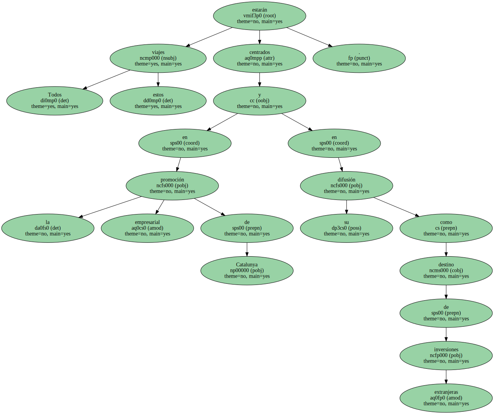

EN POCO MÁS de UN MES , entre el 13 de enero y el 17 de febrero , el presidente de la Generalitat acudirá dos veces a EEUU ( una a California y otra a Nueva York ) , así como a Egipto y Polonia en visita oficial.

Todos estos viajes estarán centrados en la promoción empresarial de Catalunya y en su difusión como destino de inversiones extranjeras.
